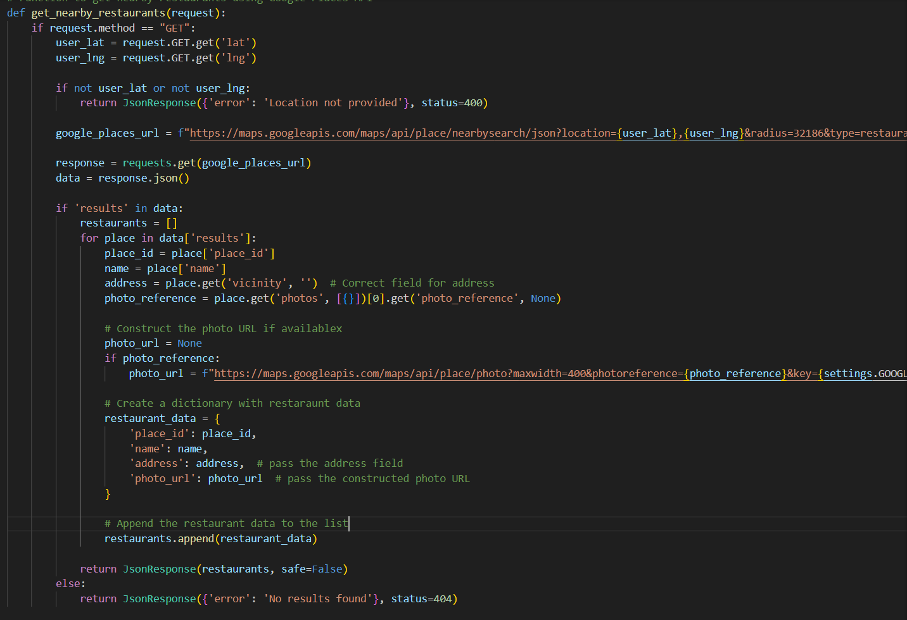

ByteMatch is a dynamic web application designed to help users discover and connect over their shared taste in restaurants. Built using the Django framework and the Google Places API, ByteMatch offers a seamless experience for browsing nearby restaurants, making connections with other users, and finding mutual favorites. At its core, ByteMatch allows users to locate restaraunts within a 20-mile radius by leveraging the Google Places API. The application retrieves restaurant details such as names, addresses, and photos, presenting them in an intuitive and visually appealing format. Users can "like" restaurants, which are then saved to their personalized profiles. The implementation of this functionality involves Django models like LikedRestaurant, which efficiently store and manage user preferences in a relational database. Link: ByteMatch.
